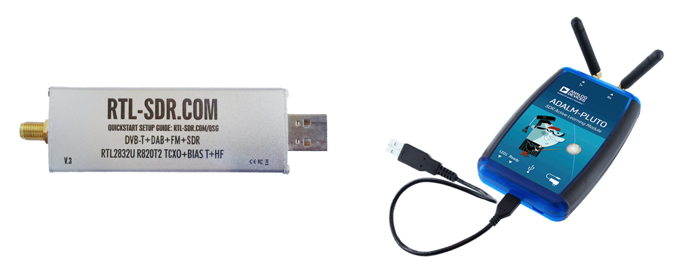
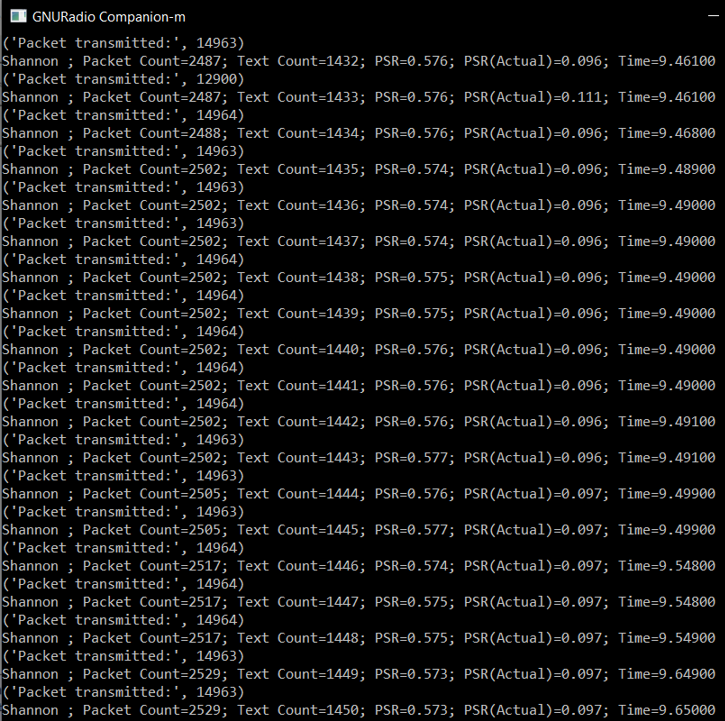

Overview
We were tasked to design a filter to suppress interference and obtain the message using a wireless medium.
You are required to employ Pluto Adalm, RTL-SDR, Analog Discovery 2, LTSPICE, GNURadio with the given specifications (Design A, B or C) for your group, and design a filter to suppress the interference at Intermediate Frequency (IF, signal from the RTL-SDR).
Our constraints are summarised below:
| Parameters | Unit | Amplitude |
|---|---|---|
| Signal Frequency | Hz | 160k |
| Interference Frequency | Hz | 320k |
| Signal Amplitude | Nil | 0.15 |
| Interference Amplitude | Nil | 0.3 |
(Summary of design constraints)
Project Components
(From left to right: RTL SDR, Adalm Pluto)
- RTL SDR: Software-defined radio to receive signals
- Adalm Pluto: to transmit signals
Proof of Concept
We simulated the filter design using LTSpice and we chose our best simulation to be converted into actual hardware prototype as shown below.

(Filter design on breadboard)
During demonstration, we are able to achieve a PSR (actual) of around 0.1 at 100% interference level.
(PSR)